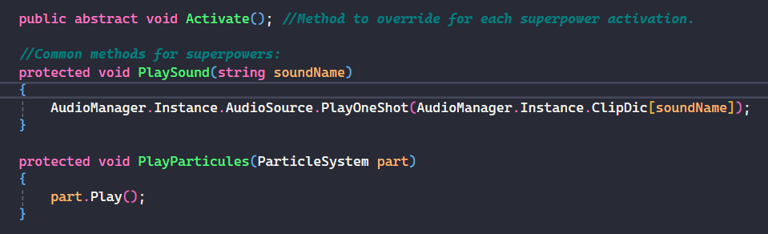
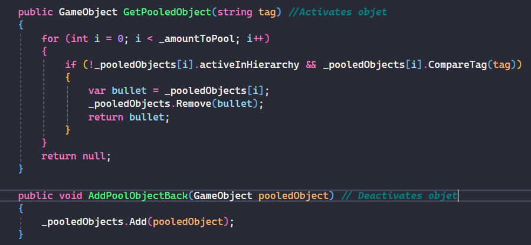

POWER MANIA

Concept
Platformer 2D à un niveau qui permet au joueur de manier différents super-pouvoirs dans l'objectif de franchir les obstacles sur sa route jusqu'au drapeau final.
Pourquoi ?
Thème obligatoire (projet étudiant), le but était d'apprendre à utiliser des design patterns et de gérer la propreté de notre code pour produire un jeu optimisé.
Mon travail
C'était un projet solo, outre les graphismes provenant d'itch.io, j'ai tout fait moi-même : éléments de juice, implémentation des designs patterns, UX, LD, GD, et optimisation.
Comment ?
Pattern Subclass Sandbox
- Héritage avec une classe abstraite qui gère la fonctionnalité du super-pouvoir
- Lien avec les composants utilisés et les feedbacks (sons, visuels...).
Optimisation
- Désactivation des comportements ennemis non visibles à l'écran.
- Implémentation d'une Object Pool pour les projectiles ennemis.

Base du pattern Subclass Sandbox

Base du pattern Object Pool